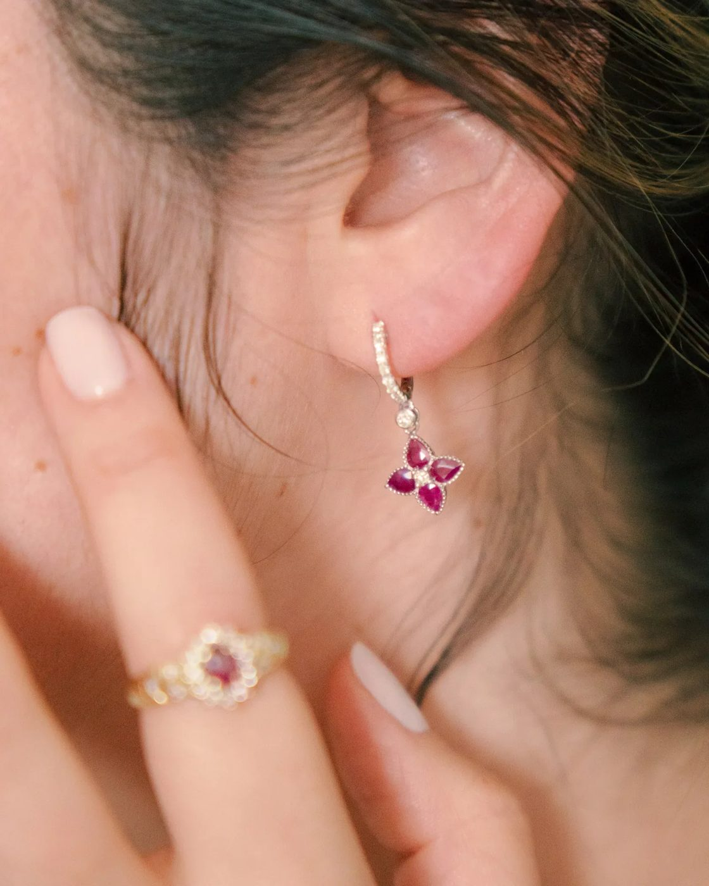
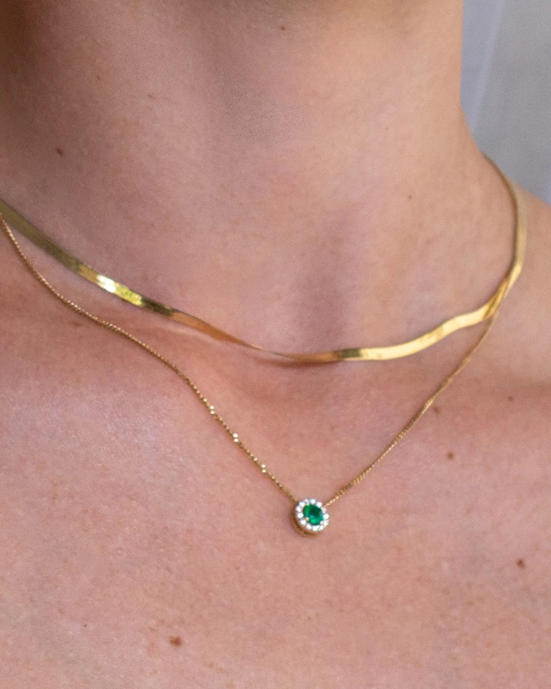
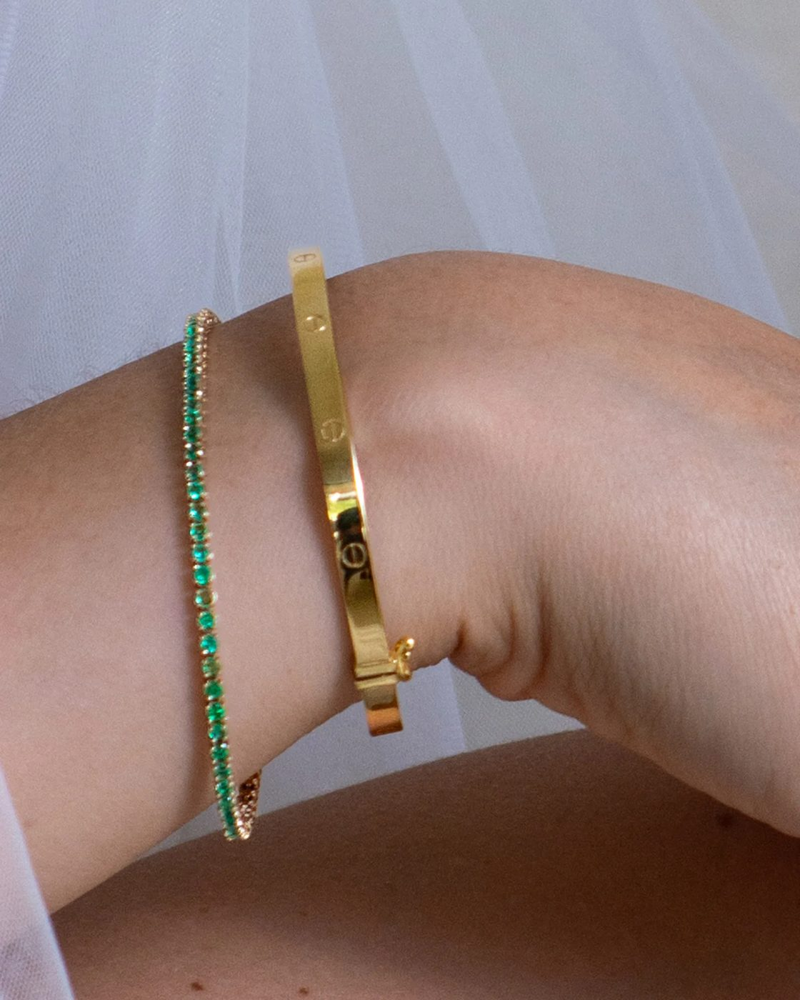
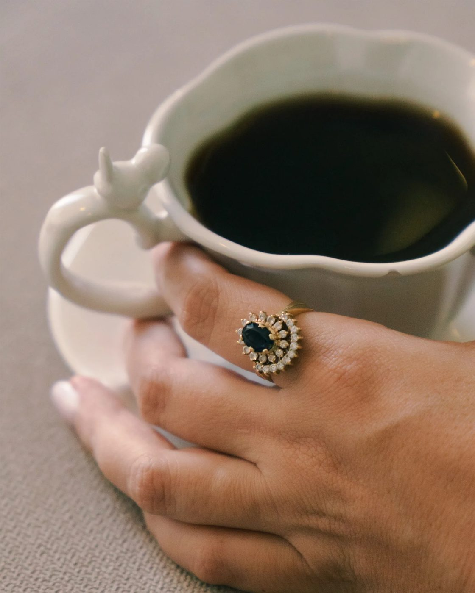

Conversamos sobre tu idea
Escríbenos por WhatsApp con una foto, un recuerdo o solo una intuición. Escuchamos la historia detrás de la pieza y la ocasión.
- WhatsApp 24 h
- Sin compromiso

Personaliza tus joyasUna pieza pensada para ti, hecha a mano en nuestro taller. Así es el camino que recorremos juntos.
Cuéntanos tu idea por WhatsApp Descubre el procesoEscríbenos por WhatsApp con una foto, un recuerdo o solo una intuición. Escuchamos la historia detrás de la pieza y la ocasión.
Te mostramos piedras y metales reales para que elijas con calma: esmeraldas colombianas, rubíes, oro de 18k…
Recibes el diseño y la cotización final. Ajustamos lo que haga falta; el taller empieza solo cuando digas «sí».
Nuestros orfebres la elaboran a mano. Te la entregamos con cita en Armenia o la enviamos a cualquier ciudad de Colombia.
Algunas piezas que empezaron como una conversación.





El precio depende de la piedra, el metal y el trabajo de taller. Conversaremos contigo antes de cotizar.
Confirmamos el tiempo de taller y entrega antes de comenzar. Cuéntanos si tienes una fecha especial.
Consulta la política de devoluciones publicada y confirma las condiciones de tu encargo con nuestro equipo.
Consulta con nuestro equipo la disponibilidad y las condiciones del certificado de autenticidad.